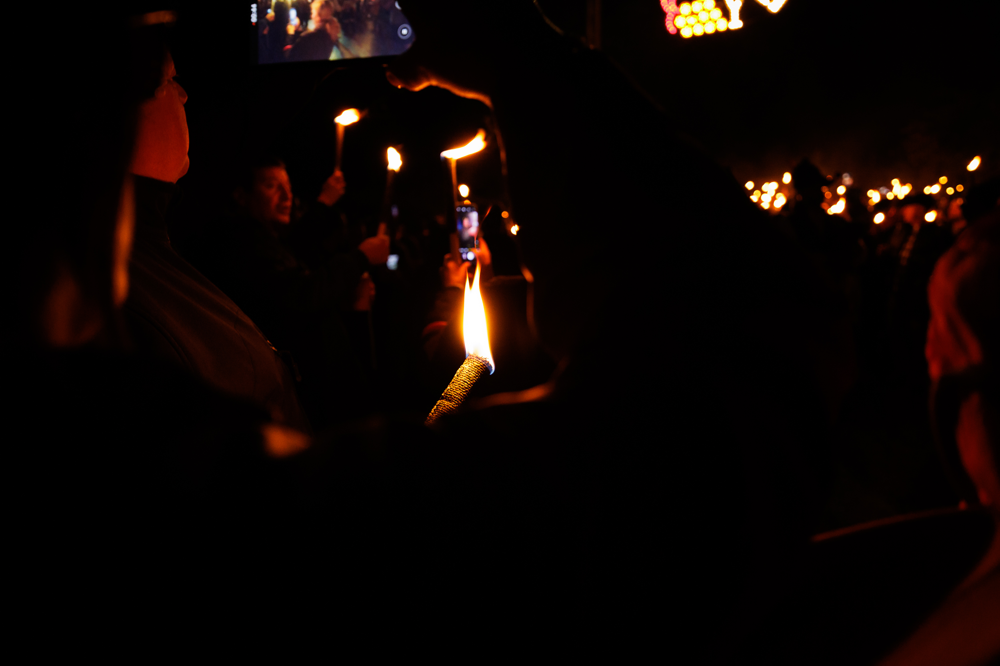
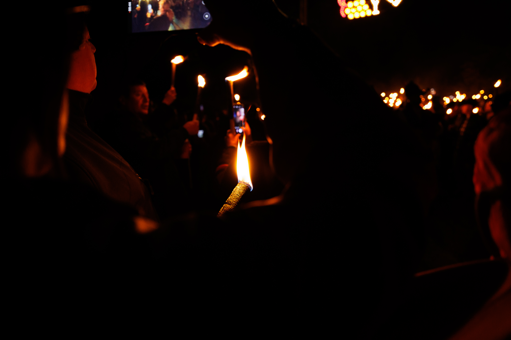

Pasabodeghas


O Espazo Activo da Ulla é un espazo de cultura, encontro, lecer e animación. Nace no seo da Asociación Cultural San Campio no ano 2001 a partir de contactos persoais entre membros de asociacións.
A realización deste proxecto fundaméntase no valeiro existente de actividades alternativas nesta zona do rural, e na falla de espazos para o encontro; na procura da promoción e a cooperación cultural, a difusión e o espallamento da cultura das terras da Ulla en particular e da galega en xeral.
Ao longo da súa vida esta iniciativa sufriu unha evolución, dando lugar a diferentes cambios no formato, partindo sempre dunha análise de necesidades e das inquedanzas dos veciños e veciñas e membros da entidade.
Actualmente realízase na última fin de semana do mes de outubro. Durante estes dous días xérase un gran espazo aberto e de convivencia, fomentando o intercambio de experiencias entre os asistentes, e entre estes e mailos veciños/as da zona a través das diferentes actividades.
A actividades estrela é o “Pasabodeghas” que se celebra o sábado pola tarde; unha ruta gaiteira por adegas-casas que se converten en espazos de gastronomía e cultura.
Pola noite no espazo “Festexarte” teñen lugar os concertos de grupos de música folk, ska, rock…acompañados dun magosto.
O domingo celébrase un xantar-foliada, e o remate pono un espectáculo alternativo.
A nivel xeral, hai un bo nivel de participación e implicación. Cóntase coa colaboración de diferentes axentes comunitarios (asociacións, grupos musicais, empresas, organismos públicos)… e tamén de particulares.
En definitiva, este proxecto busca un uso activo e creativo do lecer da poboación xeral (nenos/as, xoves, persoas adultas e maiores) ao tempo que pon en valor as manifestacións culturais galegas como parte do noso patrimonio cultural.
Parking Gratis
Baños
Comida
Texto sobre a programacion, e poñer o cartel ou asi.


 



A partir dos 12 anos É NECESARIO O PACK PASABODEGHAS PARA ACCEDER Á RUTA.
De 12 a 18 anos só poden consumir bebidas non alcohólicas (refrescos).
Os menores de 12 anos entran gratis acompañados dun adulto, e poden mercar un pack infantil o día do evento, que inclúe xerro infantil, pulseira, lambonadas e degustación de refrescos.
Ten un custo de 15€ e inclúe xerro de barro, pulseira, degustación de bebidas e tapas, ambiente festeiro con música tradicional, espectáculos, mostras, concertos...